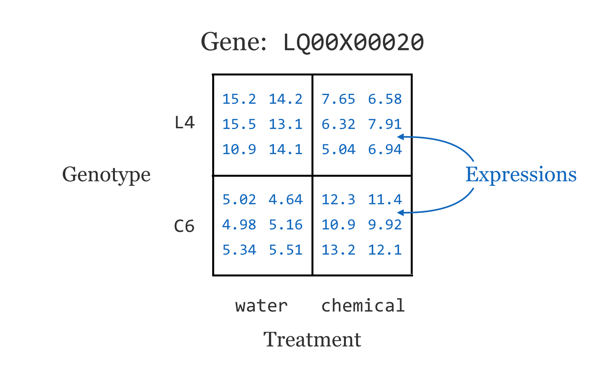
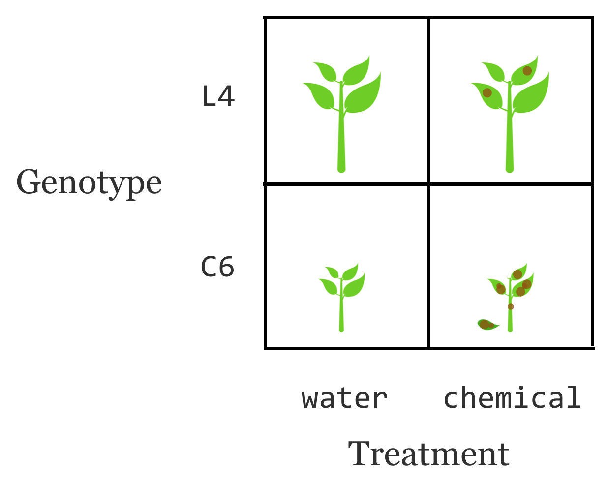
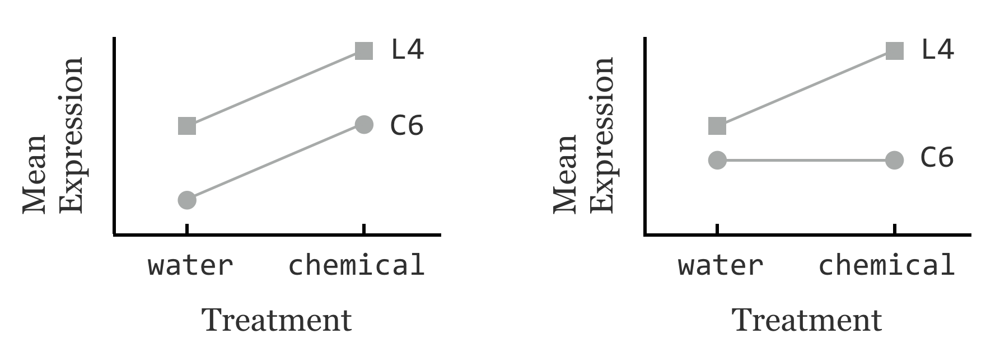
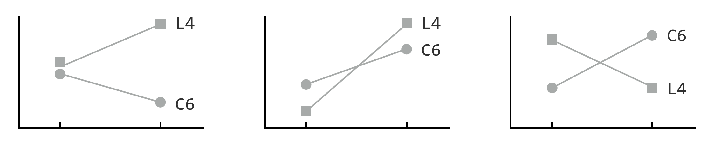
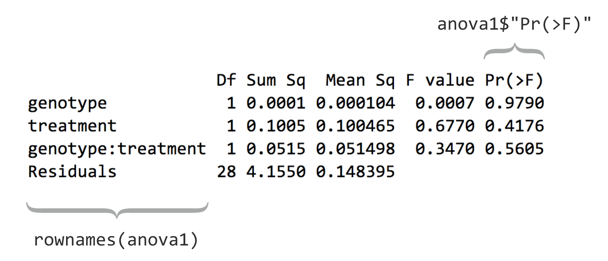
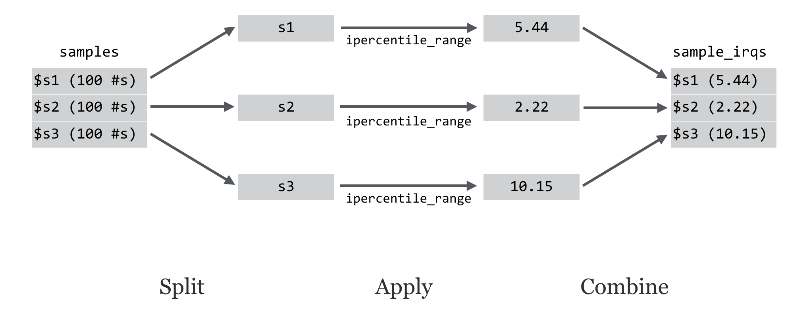
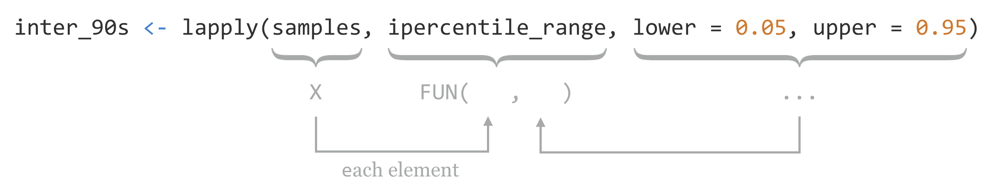
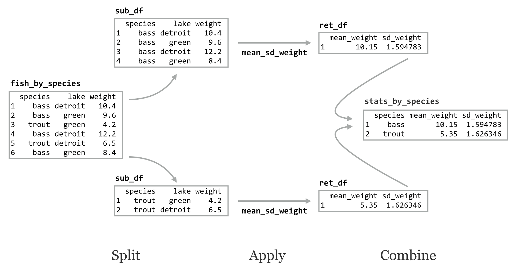
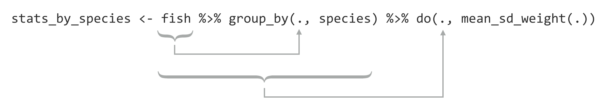

Chapter 36 Split, Apply, Combine
Although we touched briefly on writing functions, the discussion has so far been largely about the various types of data used by R and the syntax and functions for working with them. These include vectors of various types, lists, data frames, factors, indexing, replacement, and vector recycling.
At some point won’t we discuss analyzing a meaningful data set? Yes, and that point is now. We’ll continue to work with the gene expression data from chapter 35, “Character and Categorical Data,” after it’s been processed to include the appropriate individual columns using the functions in the stringr library. Here’s the code from the last chapter which pre-processed the input data:
library(stringr)
expr_long <- read.table("expr_long_coded.txt",
header = TRUE,
sep = "\t",
stringsAsFactors = FALSE)
# Split sample column into 3-column matrix on _'s
sample_split <- str_split_fixed(expr_long$sample, "_", 3)
# Turn the matrix into a data frame with appropriate column names
# and combine it with the original data frame into a larger set
sample_split_df <- data.frame(sample_split)
colnames(sample_split_df) <- c("genotype", "treatment", "tissuerep")
expr_long_split <- cbind(expr_long, sample_split_df)
# Create an individual tissue column
expr_long_split$tissue <- NA
expr_long_split$tissue[str_detect(expr_long_split$tissuerep, "A")] <- "A"
expr_long_split$tissue[str_detect(expr_long_split$tissuerep, "B")] <- "B"
expr_long_split$tissue[str_detect(expr_long_split$tissuerep, "C")] <- "C"
# We've already checked for NAs
#print(expr_long_split[is.na(expr_long_split$tissue), ]) # should print 0 rows
# Create a new rep column
expr_long_split$rep <- NA
expr_long_split$rep[str_detect(expr_long_split$tissuerep, "1")] <- "1"
expr_long_split$rep[str_detect(expr_long_split$tissuerep, "2")] <- "2"
expr_long_split$rep[str_detect(expr_long_split$tissuerep, "3")] <- "3"
# We've already checked for NAs, but a few were left
#print(expr_long_split[is.na(expr_long_split$rep), ]) # should print 0 rows
# So we remove all rows with such "bad" IDs
bad_ids <- expr_long_split$id[is.na(expr_long_split$rep)]
bad_rows <- expr_long_split$id %in% bad_ids # logical vector
expr_long_split <- expr_long_split[!bad_rows, ] # logical selection
As we continue, we’ll likely want to rerun our analysis script in different ways, without having to rerun all of the code above, as it takes a few minutes to run this preprocessing script. One good strategy would be to write this “cleaned” data frame out to a text file using write.table(), and read it back in to an analysis-only script with read.table(). Just for variety, though, let’s use the save() function, which stores any R object (such as a list, vector, or data frame) to a file in a compressed binary format.
save(expr_long_split, file = "expr_long_split.Rdata")
The traditional file extension for such an R-object file is .Rdata. Such data files are often shared among R programmers.
The first few lines of the saved data frame are all readings for the same gene. There are ~360,000 lines in the full data frame, with readings for over 11,000 genes. (The script above, which processes the expr_long_coded.txt file, can be found in the file expr_preprocess.R.) The figure below shows the results of print(head(expr_long_split)):
id annotation expression sample genotype treatment
1 LQ00X000020 Hypothetical protein 5.024142 C6_control_A1 C6 control
2 LQ00X000020 Hypothetical protein 4.646697 C6_control_A3 C6 control
3 LQ00X000020 Hypothetical protein 4.986592 C6_control_B1 C6 control
4 LQ00X000020 Hypothetical protein 5.164292 C6_control_B2 C6 control
5 LQ00X000020 Hypothetical protein 5.348810 C6_control_B3 C6 control
6 LQ00X000020 Hypothetical protein 5.519393 C6_control_C1 C6 control
tissuerep tissue rep
1 A1 A 1
2 A3 A 3
3 B1 B 1
4 B2 B 2
5 B3 B 3
6 C1 C 1
Let’s start a new analysis script that loads this data frame before we begin our analysis of it. For this script we may also need the stringr library, and we’re going to include the dplyr library as well (which we assume has been separately installed with install.packages("dplyr") in the interactive console).
library(stringr)
library(dplyr)
## This script analyzes the data stored in the data frame
## expr_long_split.Rdata, containing gene expression data
load("expr_long_split.Rdata")
expr <- expr_long_split
The load() function creates a variable with the same name that was used in save(), and for convenience we’ve created a copy of the data frame with a shorter variable name, expr. While these sorts of R data files are convenient for R users, the benefit of a write.table() approach would be that other users and languages would have more direct access to the data (e.g., in Python or even Microsoft Excel).
This data set represents a multifactor analysis of gene expression111 in two genotypes of a plant, where a control treatment (water) and a chemical treatment (pesticide) have been applied to each. Further, three tissue types were tested (A, B, and C, for leaf, stem, and root, respectively) and two or three replicates were tested for each combination for statistical power. These data represent microarray readings and have already been normalized and so are ready for analysis.112 (These data are also anonymized for this publication at the request of the researchers.)
For now, we’ll focus on the genotype and treatment variables. Ignoring other variables, this gives us around 24 expression readings for each gene.

This sort of design is quite common in gene expression studies. It is unsurprising that gene expression will differ between two genotypes, and that gene expression will differ between two treatments. But genotypes and treatments frequently react in interesting ways. In this case, perhaps the L4 genotype is known to grow larger than the C6 genotype, and the chemical treatment is known to be harmful to the plants. Interestingly, it seems that the chemical treatment is less harmful to the L4 genotype.

The natural question is: which genes might be contributing to the increased durability of L4 under chemical exposure? We can’t simply look for the differences in mean expression between genotypes (with, say, t.test()), as that would capture many genes involved in plant size. Nor can we look for those with mean expression differences that are large between treatments, because we know many genes will react to a chemical treatment no matter what. Even both signals together (left side of the image below) are not that interesting, as they represent genes that are affected by the chemical and are involved with plant size, but may have nothing at all to do with unique features of L4 in the chemical treatment. What we are really interested in are genes with a differential response to the chemical between two the two genotypes (right side of the image below).

Does that mean that we can look for genes where the mean difference is large in one genotype, but not the other? Or within one treatment, but not that other? No, because many of these interesting scenarios would be missed:

For each gene’s expression measurements, we need a classic ANOVA (analysis of variance) model. After accounting for the variance explained by the genotype difference (to which we can assign a p value indicating whether there is a difference) as well as the variance explained by the treatment (which will also have a p value), is the leftover variance — for the interaction/differential response — significant?
A Single Gene Test, Formulas
To get started, we’ll run an ANOVA for just a single gene.113 First, we’ll need to isolate a sub-data frame consisting of readings for only a single ID. We can use the unique() function to get a vector of unique IDs, and then the %in% operator to select rows matching only the first of those.
uniq_ids <- unique(expr$id)
expr1 <- expr[expr$id %in% uniq_ids[1], ]
This data frame contains rows for a single gene and columns for expression, genotype, treatment, and others (we could verify this with a simple print() if needed). We wish to run an ANOVA for these variables, based on a linear model predicting expression values from genotype, treatment, and the interaction of these terms.
The next step is to build a simple linear model using the lm() function, which takes as its only required parameter a “formula” describing how the predictor values should be related to the predicted values. Note the format of the formula: response_vector ~ predictor_vector1 + predictor_vector2 + predictor_vector1 : predictor_vector2, indicating that we wish to determine how to predict values in the response vector using elements from the predictor vectors.
lm1 <- lm(expr1$expression ~ expr1$genotype + # genotype
expr1$treatment + # treatment
expr1$genotype : expr1$treatment) # interaction
If the vectors or factors of interest exist within a data frame (as is the case here), then the lm() function can work with column names only and a data = argument.
lm1 <- lm(expression ~ genotype + treatment + genotype:treatment, data = expr1)
We can then print the linear model returned with print(lm1), as well as its structure with str(lm1), to see that it contains quite a bit of information as a named list:
Call:
lm(formula = expression ~ genotype + treatment + genotype:treatment,
data = expr1)
Coefficients:
(Intercept) genotypeL4
5.38363 -0.08384
treatmentcontrol genotypeL4:treatmentcontrol
-0.19230 0.16046
List of 13
$ coefficients : Named num [1:4] 5.3836 -0.0838 -0.1923 0.1605
..- attr(*, "names")= chr [1:4] "(Intercept)" "genotypeL4" "treatmentcontrol"
"genotypeL4:treatmentcontrol"
$ residuals : Named num [1:32] -0.167 -0.545 -0.205 -0.027 0.157 ...
..- attr(*, "names")= chr [1:32] "1" "2" "3" "4" ...
$ effects : Named num [1:32] -29.9003 -0.0102 0.317 0.2269 0.2552 ...
...
Before we continue, what is this expression ~ genotype + treatment + genotype : treatment “formula”? As usual, we can investigate a bit more by assigning it to a variable and using class() and str().
f <- expression ~ genotype + treatment + genotype : treatment
str(f)
Class 'formula' length 3 expression ~ genotype + treatment + genotype:treatment
..- attr(*, ".Environment")=
The output indicates that the class is of type "formula" and that it has an ".Environment" attribute. It’s a bit opaque, but a formula type in R is a container for a character vector of variable names and a syntax for relating them to each other. The environment attribute specifies where those variables should be searched for by default, though functions are free to ignore that (as in the case of data = for lm(), which specifies that the variables should be considered column names in the given data frame). Formulas don’t even need to specify variables that actually exist. Consider the following formula and the all.vars() function, which inspects a formula and returns a character vector of the unique variable names appearing in the formula.
f <- alpha ~ beta + beta : gamma
print(all.vars(f)) # [1] "alpha" "beta" "gamma"
Anyway, let’s return to running the statistical test for the single gene we’ve isolated. The lm1 result contains the model predicting expressions from the other terms (where this “model” is a list with a particular set of elements). To get the associated p values, we’ll need to run it through R’s anova() function.
anova1 <- anova(lm1)
print("Printed Result: ")
print(anova1)
print("Structure:")
str(anova1)
Printing the result shows that the p values (labeled "Pr(>F)") for the genotype, treatment, and interaction terms are 0.97, 0.41, and 0.56, respectively. If we want to extract the p values individually, we’ll need to first inspect its structure with str(), revealing that the result is both a list and a data frame — unsurprising because a data frame is a type of list. The three p values are stored in the "Pr(>F)" name of the list.
[1] "Printed Result: "
Analysis of Variance Table
Response: expression
Df Sum Sq Mean Sq F value Pr(>F)
genotype 1 0.0001 0.000104 0.0007 0.9790
treatment 1 0.1005 0.100465 0.6770 0.4176
genotype:treatment 1 0.0515 0.051498 0.3470 0.5605
Residuals 28 4.1550 0.148395
[1] "Structure:"
Classes ‘anova’ and 'data.frame': 4 obs. of 5 variables:
$ Df : int 1 1 1 28
$ Sum Sq : num 0.000104 0.100465 0.051498 4.155049
$ Mean Sq: num 0.000104 0.100465 0.051498 0.148395
$ F value: num 0.000704 0.677016 0.347033 NA
$ Pr(>F) : num 0.979 0.418 0.561 NA
- attr(*, "heading")= chr "Analysis of Variance Table\n" "Response: expression"
We can thus extract the p values vector as pvals1 <- anova1$"Pr(>F)"; notice that we must use the quotations to select from this list by name because of the special characters ((, >, and )) in the name. For the sake of argument, let’s store these three values in a data frame with a single row, and column names "genotype", "treatment", and "genotype:treatment" to indicate what the values represent.
pvals1 <- anova1$"Pr(>F)"
pvals_df1 <- data.frame(pvals1[1], pvals1[2], pvals1[3])
colnames(pvals_df1) <- c("genotype", "treatment", "genotype:treatment")
print(pvals_df1)
Output:
genotype treatment genotype:treatment
1 0.9790277 0.4175689 0.5605206
This isn’t bad, but ideally we wouldn’t be “hard coding” the names of these p values into the column names. The information is, after all, represented in the printed output of the print(anova1) call above. Because anova1 is a data frame as well as a list, these three names are actually the row names of the data frame. (Sometimes useful data hide in strange places!)

So, given any result of a call to anova(), no matter the formula used in the linear model, we should be able to computationally produce a single-row p-values data frame. But we’ve got to be clever. We can’t just run pvals_df1 <- data.frame(pvals1), as this will result in a single-column data frame with three rows, rather than a single-row data frame with three columns. Rather, we’ll first convert the p-values vector into a list with as.list(), the elements of which will become the columns of the data frame because data frames are a type of list. From there, we can assign the rownames() of anova1 to the colnames() of the pvals_df1 data frame.114
pvals1 <- anova1$"Pr(>F)" # vector of p-values
pvals_list1 <- as.list(pvals1) # list of p-values
pvals_df1 <- data.frame(pvals_list1) # single-row data frame
colnames(pvals_df1) <- rownames(anova1) # column names from rownames(anova1)
print(pvals_df1)
The programmatically generated output is as follows:
genotype treatment genotype:treatment Residuals
1 0.9790277 0.4175689 0.5605206 NA
This time, there’s an extra column for the residuals, but that’s of little significance.
This whole process — taking a sub–data frame representing expression values for a single gene and producing a single-row data frame of p values — is a good candidate for encapsulating with a function. After all, there are well-defined inputs (the sub–data frame of data for a single gene) and well-defined outputs (the p-values data frame), and we’re going to want to run it several thousand times, once for each gene ID.
## Given a data frame with columns for expression,
## genotype, and treatement, runs a linear model
## and returns a single-row data frame with p-values in columns
sub_df_to_pvals_df <- function(sub_df) {
lm1 <- lm(expression ~ genotype + treatment + genotype:treatment,
data = sub_df)
anova1 <- anova(lm1)
pvals1 <- anova1$"Pr(>F)"
pvals_list1 <- as.list(pvals1)
pvals_df1 <- data.frame(pvals_list1)
colnames(pvals_df1) <- rownames(anova1)
return(pvals_df1)
}
To get the result for our expr1 sub–data frame, we’d simply need to call something like pvals_df1 <- sub_df_to_pvals_df(exp1). The next big question is: how are we going to run this function not for a single gene, but for all 11,000 in the data set? Before we can answer that question, we must learn more about the amazing world of functions in R.
Exercises
Generate a data frame with a large amount of data (say, one with two numeric columns, each holding 1,000,000 entries). Write the data frame to a text file with
write.table()and save the data frame to an R data file withsave(). Check the size of the resulting files. Is one smaller than the other? By how much?The example we’ve covered — generating a small data frame of results (p values) from a frame of data (expression values) by using a function — is fairly complex owing to the nature of the experimental design and the test we’ve chosen. Still, the basic pattern is quite common and very useful.
A default installation of R includes a number of example data sets. Consider the
CO2data frame, which describes CO2 uptake rates of plants in different treatments ("chilled"and"nonchilled"; seehelp(CO2)for more detailed information). Here’s the output ofprint(head(CO2)):Plant Type Treatment conc uptake 1 Qn1 Quebec nonchilled 95 16.0 2 Qn1 Quebec nonchilled 175 30.4 3 Qn1 Quebec nonchilled 250 34.8 4 Qn1 Quebec nonchilled 350 37.2 5 Qn1 Quebec nonchilled 500 35.3 6 Qn1 Quebec nonchilled 675 39.2The conc column lists different ambient CO2 concentrations under which the experiment was performed. Ultimately, we will want to test, for each concentration level, whether the uptake rate is different in chilled versus nonchilled conditions. We’ll use a simple t test for this.
Start by writing a function that takes a data frame with these five columns as a parameter and returns a single-row, single-column data frame containing a p value (reported by
t.test()) for chilled uptake rates versus nonchilled uptake rates. (Your function will need to extract two vectors of update rates to provide tot.test(), one for chilled values and one for nonchilled.)Next, extract a sub–data frame containing rows where
concvalues are1000, and run your function on it. Do the same for a sub–data frame containingconcvalue of675.
Attack of the Functions!
While R has a dedicated function for computing the interquartile range (the range of data values between the 25th percentile and the 75th), let’s write our own so that we can explore functions more generally. We’ll call it ipercentile_range, to note that it computes an interpercentile range (where the percentiles just happen to be quartiles, for now).
ipercentile_range <- function(x) {
lower_value <- quantile(x, 0.25)
upper_value <- quantile(x, 0.75)
return(upper_value - lower_value)
}
Next, let’s make a list containing some samples of random data.
samples <- list()
samples$s1 <- rnorm(100, mean = 10, sd = 4)
samples$s2 <- rnorm(100, mean = 5, sd = 2)
samples$s3 <- rnorm(100, mean = 20, sd = 8)
To compute the three interquartile ranges, we could call the function three times, once per element of the list, and store the results in another list.
iqr1 <- ipercentile_range(samples$s1) # 5.44
iqr2 <- ipercentile_range(samples$s2) # 2.22
iqr3 <- ipercentile_range(samples$s3) # 10.15
sample_iqrs <- list(iqr1, iqr2, iqr3) # list of 5.44 2.22 10.15
Not too bad, but we can do better. Notice the declaration of the function — we’ve used the assignment operator <- to assign to ipercentile_range, just as we do with other variables. In fact, ipercentile_range is a variable! And just as with other data, we can check its class and print it.
print(class(ipercentile_range)) # [1] "function"
print(ipercentile_range)
When it is printed, we see the source code for the function:
function (x)
{
lower_value <- quantile(x, 0.25)
upper_value <- quantile(x, 0.75)
return(upper_value - lower_value)
}
In R, functions are a type of data just like any other. Thus R is an example of a “functional” programming language.115 One of the important implications is that functions can be passed as parameters to other functions; after all, they are just a type of data. This is a pretty tricky idea. Let’s explore it a bit with the lapply() function. This function takes two parameters: first, a list, and second, a function to apply to each element of the list. The return value is a list representing the collated outputs of each function application. So, instead of using the four lines above to apply ipercentile_range() to each element of samples, we can say:
sample_irqs <- lapply(samples, ipercentile_range) # list of 5.44 2.22 10.15
The resulting list will have the same three values as above, and the names of the elements in the output list will be inherited from the input list (so sample_irqs$s1 will hold the first range or 5.44, for this random sample anyway).
This is an example of the powerful “split-apply-combine” strategy for data analysis. In general, this strategy involves splitting a data set into pieces, applying an operation or function to each, and then combining the results into a single output set in some way.

When the input and output are both lists, this operation is also known as a “map.” In fact, this paradigm underlies some parallel processing supercomputer frameworks like Google’s MapReduce and the open-source version of Hadoop (although these programs aren’t written in R).
Because lists are such a flexible data type, lapply() is quite useful. Still, in some cases — like this one — we’d prefer the output to be a vector instead of a list. This is common enough to warrant a conversion function called unlist() that extracts all of the elements and subelements of a list to produce a vector.
irqs_vec <- unlist(sample_irqs)
print(irqs_vec) # [1] 5.44 2.22 10.15
Be warned: because lists are more flexible than vectors, if the list given to unlist() is not simple, the elements may be present in the vector in an odd order and they will be coerced into a common data type.
The lapply() function can also take as input a vector instead of a list, and it is but one of the many “apply” functions in R. Other examples include apply(), which applies a function to each row or column of a matrix,116 and sapply() (for “simple apply”), which detects whether the return type should be a vector or matrix depending on the function applied. It’s easy to get confused with this diversity, so to start, it’s best to focus on lapply() given its relatively straightforward (but useful) nature.
Collecting Parameters with …
The help page for lapply() is interesting. It specifies that the function takes three parameters: X (the list to apply over), FUN (the function to apply), and ..., which the help page details as “optional arguments to FUN.”
Usage:
lapply(X, FUN, ...)
The ... parameter is common in R, if a bit mysterious at times. This “parameter” collects any number of named parameters supplied to the function in a single unit. This collection can then be used by the function; often they are passed on to functions called by the function.
To illustrate this parameter, let’s modify our ipercentile_range() function to take two optional parameters, a lower and upper percentile from which the range should be computed. While the interquartile range is defined as the range in the data from the 25th to the 75th percentile, our function will be able to compute the range from any lower or upper percentile.
ipercentile_range <- function(x, lower = 0.25, upper = 0.75) {
lower_value <- quantile(x, lower)
upper_value <- quantile(x, upper)
return(upper_value - lower_value)
}
Now we can call our function as ipercentile_range(sample$s1) to get the default interquartile range of the first sample, or as ipercentile_range(samples$s2, lower = 0.05, upper = 0.95), to get the middle 90th percentile range. Similarly, we have the ability to supply the optional parameters through the ... of lapply(), which will in turn supply them to every call of the ipercentile_range function during the apply step.
inter_90s <- lapply(samples, ipercentile_range, lower = 0.05, upper = 0.95)
print(unlist(inter_90s)) # [1] 12.12 6.30 22.08
This syntax might seem a bit awkward, but something like it is necessary if we hope to pass functions that take multiple parameters as parameters to other functions. This also should help illuminate one of the commonly misunderstood features of R.

Functions Are Everywhere
Although mostly hidden from view, most (if not all) operations in R are actually function calls. Sometimes function names might contain nonalphanumeric characters. In these cases, we can enclose the function name in backticks, as in iqr1 <- `ipercentile_range`(samples$s1). (In chapter 30, “Variables and Data,” we learned that any variable name can be enclosed in backticks this way, though it’s rarely recommended.)
What about something like the lowly addition operator, +? It works much like a function: given two inputs (left-hand-side and right-hand-side vectors), it returns an output (the element-by-element sum).
s <- c(1, 2) + c(6, 3) # 7 5
In fact, + really is a function that takes two parameters, but to call it that way we need to use backticks.
s <- `+`(c(1, 2), c(6, 3)) # 7 5
This might be considered somewhat amazing — the “human-readable” version is converted into a corresponding function call behind the scenes by the interpreter. The latter, functional representation is easier for the interpreter to make use of than the human-friendly representation. This is an example of syntactic sugar: adjustments to a language that make it “sweeter” for human programmers. R contains quite a lot of syntactic sugar. Even the assignment operator <- is a function call! The line a <- c(1, 2, 3) is actually syntactic sugar for `<-`("a", c(1, 2, 3)).
Because functions are just a type of data and function names are variables, we can easily reassign new functions to old names. Perhaps a colleague has left her R session open, so we decide to redefine + to mean “to the power of”:
# Redefines + to mean power! Mwahaha
`+` <- function(a, b) {
value <- a ^ b
return(value)
}
print(3 + 7) # [1] 2187
Ok, maybe that’s a bit too evil. Another feature of R is that function names that begin and end with % and take two parameters signals that the function can be used as an infix function via syntactic sugar.
`%equalish%` <- function(a, b, epsilon = 0.00001) {
result <- abs(a - b) < epsilon
return(result)
}
answer <- c(4.00000001, 6) %equalish% c(4, 2)
print(answer) # [1] TRUE FALSE
Sugary Data Frame Split-Apply-Combine
Although the basic units of data in R are vectors, and lists are used to store heterogeneous data, data frames are important as a storage mechanism for tabular data. Because lapply() can apply a function to each element of a list, it can also apply a function to each column of a data frame. This fact can be used, for example, to extract all numeric columns from a data frame with an application of lapply() and is.numeric() (the latter returns TRUE when its input is a numeric type; we’ll leave the details as an exercise).
For most tabular data, though, we aren’t interested in independently applying a function to each column. Rather, we more often wish to apply a function to different sets of rows grouped by one or more of the columns. (This is exactly what we want to do with the sub_df_to_pvals() function we wrote for our gene expression analysis.) The dplyr package (install.packages("dplyr")) provides this ability and is both powerful and easy to use, once we get used to its specialized syntactic sugar.
Initially, we’ll cover two functions in the dplyr package, group_by() and do(): group_by() adds metadata (as attributes) to a data frame indicating which categorical columns define groups of rows and returns such a “grouped” data frame, while do() applies a given function to each group of a grouped data frame, and returns a data frame of results with grouping information included.
To illustrate, we’ll first create a simple data frame on which to work, representing samples of fish from one of two different lakes: Green Lake or Detroit Lake.
species <- c("bass", "bass", "trout", "bass", "trout", "bass")
lake <- c("detroit", "green", "green", "detroit", "detroit", "green")
weight <- c(10.4, 9.6, 4.2, 12.2, 6.5, 8.4)
fish <- data.frame(species, lake, weight)
print(fish)
The nicely formatted printout:
species lake weight
1 bass detroit 10.4
2 bass green 9.6
3 trout green 4.2
4 bass detroit 12.2
5 trout detroit 6.5
6 bass green 8.4
First, we’ll group the data frame by the species column using group_by(). This function takes a data frame (or column-named matrix or similar) and a listing of column names (without quotes) that define the groups as additional parameters. As with using the data = parameter for lm(), the function looks within the data frame for the columns specified.
fish_by_species <- group_by(fish, species)
print(fish_by_species)
Is this data frame different from the original? Yes, but mostly in the attributes/metadata. When printed, we get some information on the “source” (where the data are stored — dplyr can access data from remote databases) and the groups:
Source: local data frame [6 x 3]
Groups: species
species lake weight
1 bass detroit 10.4
2 bass green 9.6
...
Handily, unlike regular data frames, “grouped” data frames print only the first few rows and columns, even if they are many thousands of rows long. Sometimes this is an undesirable feature — fortunately, running data.frame() on a grouped data frame returns an ungrouped version. The class() of a grouped data frame returns "data.frame" as well as "tbl", "tbl_df", and "grouped_df". Because a grouped data frame is also a regular data frame (and is also a list!), we can still do all of the fancy indexing operations on them covered in previous chapters.
The do() function applies a function to each group of rows of a grouped data frame using a split-apply-combine strategy. The function applied must take as its first parameter a data frame, and it must return a data frame. Let’s write a function that, given a data frame or sub-data frame (group) of the fish data, returns a single-row data frame with columns for mean_weight and sd_weight. Both the mean() and sd() functions can take an na.rm argument to strip out any potential NA values in their inputs, so perhaps our function should take a similar optional parameter.
mean_sd_weight <- function(sub_df, remove_nas = FALSE) {
weights <- sub_df$weight
meanw <- mean(weights, na.rm = remove_nas)
sdw <- sd(weights, na.rm = remove_nas)
ret_df <- data.frame(mean_weight = meanw, sd_weight = sdw)
return(ret_df)
}
This function takes as input a data frame with a column for weight and returns a data frame with summary statistics. We can run it on the original data frame:
stats <- mean_sd_weight(fish)
print(stats)
mean_weight sd_weight
1 8.55 2.86339
Alternatively, we can call do() on the grouped data frame, telling it to run mean_sd_weight() on each group (sub-data frame). The syntax for do() differs slightly from that of lapply() in that we specify a . for the positional argument representing the sub-data frame.
stats_by_species <- do(fish_by_species, mean_sd_weight(.))
print(stats_by_species)
The result of the do() is another grouped data frame, made up of the rows returned by the applied function. Notice that the grouping columns have been added, even though we didn’t specify them in the ret_df inside the function.
Source: local data frame [2 x 3]
Groups: species
species mean_weight sd_weight
1 bass 10.15 1.594783
2 trout 5.35 1.626346
When developing functions that work with do(), you might run into an error like Error: Results are not data frames at positions: 1, 2. This error message indicates that the function is not returning a data frame type, which is required for do(). To diagnose problems like this, you can add print() statements inside of the function to inspect the contents of variables as the function is applied.

We can also group data frames by multiple columns, resulting in a single group per combination of column entries.117
fish_by_species_lake <- group_by(fish, species, lake)
stats_by_species_lake <- do(fish_by_species_lake, mean_sd_weight(.))
print(stats_by_species_lake)
species lake mean_weight sd_weight
1 bass detroit 11.3 1.2727922
2 bass green 9.0 0.8485281
3 trout detroit 6.5 NA
4 trout green 4.2 NA
The NA values for some standard deviations are the result of calling sd() on a vector of length one (because there was only one trout measurement per lake).
Although the applied function must take a data frame and return a data frame, there are no restrictions on the nature of the returned data frame. Here our function returns a single-row data frame, but it could return multiple rows that would be stitched together in the combine step. As an example, here’s a function that, given a data frame, computes the mean() of the weight column, and subtracts that mean from all of the entries, returning the modified data frame (so-called “mean normalization” of the data).
mean_normalize_weight <- function(sub_df, remove_nas = FALSE) {
ret_df <- sub_df
meanw <- mean(sub_df$weight)
ret_df$weight <- sub_df$weight - meanw
return(ret_df)
}
And then we can easily mean-normalize the data on a per group basis!
mean_norm_by_species <- do(fish_by_species, mean_normalize_weight(.))
print(mean_norm_by_species)
species lake weight
1 bass detroit 0.25
2 bass green -0.55
3 bass detroit 2.05
4 bass green -1.75
5 trout green -1.15
6 trout detroit 1.15
In the above output, -1.15 and 1.15 are the deviations from the mean of the trout group, and the others are deviations from the mean for the bass group.
More Sugar, Optional Parameters, Summarize
Something to note about the call to do() is that it differs syntactically from the call to lapply(). In do(), we specify not only the function to apply to each group, but also how that function will be called, using . to denote the input group data frame. This is somewhat clearer when we want to specify optional arguments to the applied function. In this case, we may want to specify that NA values should be removed by setting remove_nas = TRUE in each call to mean_sd_weight().
stats_by_species <- do(fish_by_species, mean_sd_weight(., remove_nas = TRUE))
Speaking of syntactic sugar, the magrittr package (which is installed and loaded along with dplyr, though written by a different author) provides an interesting infix function, %>%. Consider the common pattern above; after the creation of a data frame (fish), we run it through a function to create an intermediary result (fish_by_species from group_by()), run that through another function to get another result (stats_by_species from mean_sd_weight()), and so on. While this process is clear, we could avoid the creation of multiple lines of code if we were willing to nest some of the function calls.
stats_by_species <- do(group_by(fish, species), mean_sd_weight(.))
This line of code certainly suffers from some readability problems. The infix %>% function supplies its left-hand side to its right-hand side (located by . in the right-hand side), returning the result of the call to the right-hand function. Thus we can rewrite the above as follows.

Notice the similarity between this and method chaining in Python and stdin/stdout pipes on the command line. (It’s also possible to omit the . if it would be the first parameter, as in fish %>% group_by(species) %>% do(mean_sd_weight(.)).)
We demonstrated that functions applied by do() can return multiple-row data frames (in the mean-normalization example), but our mean_sd_weight() function only returns a single-row data frame with columns made of simple summary statistics. For this sort of simplified need, the dplyr package provides a specialized function called summarize(), taking a grouped data frame and other parameters indicating how such group-wise summary statistics should be computed. This example produces the same output as above, without the need for the intermediary mean_sd_weight() function.
fish_by_species <- group_by(fish, species)
stats_by_species <- summarize(fish_by_species,
mean_weight = mean(weight),
sd_weight = sd(weight))
The dplyr package provides quite a few other features and functions to explore, but even the simple combination of group_by() and do() represent a powerful paradigm. Because R is such a flexible language, the sort of advanced syntactic sugar used by dplyr is likely to become more common. Although some effort is required to understand these domain-specific languages (DSLs) and how they relate to “normal” R, the time spent is often worth it.
Exercises
The primary purpose of
lapply()is to run a function on each element of a list and collate the results into a list. With some creativity, it can also be used to run an identical function call a large number of times. In this exercise we’ll look at how p values are distributed under the “null” model—when two random samples from the same distribution are compared.Start by writing a function
null_pval()that generates two random samples withrnorm(100, mean = 0, sd = 1), compares them witht.test(), and returns the p value. The function should take a single parameter, say,x, but not actually make any use of it.Next, generate a list of 10,000 numbers with
10k_nums_list <- as.list(seq(1,10000)), and call10k_pvals_list <- lapply(10k_nums, null_pval). Turn this into a vector with10k_pvals_vec <- unlist(10k_pvals_list)and inspect the distribution withhist(10k_pvals_vec).What does this test reveal? What is the code you wrote doing, and why does it work? Why does the function need to take an
xparameter that isn’t even used? What happens if you change one of the random samples to usernorm(100, mean = 0.1, sd = 1)?If
dfis a data frame, using[]indexing treats it like a list of elements (columns). Write a function callednumeric_cols()that takes a data frame as a parameter, and returns a version of the data frame with only the numeric columns kept. You may want to make use oflapply(),unlist(),as.numeric(), and the fact that lists (and data frames when treated like lists) can be indexed by logical vector.As an example, if
df1 <- data.frame(id = c("PRQ", "XL2", "BB4"), val = c(23, 45.6, 62)), thenprint(numeric_cols(df1))should print a data frame with only thevalcolumn. Ifdf2 <- data.frame(srn = c(461, 514), name = c("Mel", "Ben"), age = c(27, 24)), thenprint(numeric_cols(df2))should print a data frame with onlysrnandagecolumns.Write a function called
subset_rows()that takes two parameters: first, a data framedf, and second, an integern. The function should return a data frame consisting ofnrandom rows fromdf(you may find thesample()function of use).The
irisdata frame is a commonly-referenced built-in R data set, describing measurements of petals for a variety of iris species. Here’s the output ofprint(head(iris)):Sepal.Length Sepal.Width Petal.Length Petal.Width Species 1 5.1 3.5 1.4 0.2 setosa 2 4.9 3.0 1.4 0.2 setosa 3 4.7 3.2 1.3 0.2 setosa 4 4.6 3.1 1.5 0.2 setosa 5 5.0 3.6 1.4 0.2 setosa ...Use
group_by()to group theirisdata frame by theSpeciescolumn, and thendo()along with yoursubset_rows()function to generate a data frame consisting of 10 random rows per species.Interestingly, there’s nothing stopping a function called by
do()(orlapply()) from itself callingdo()(and/orlapply()). Write a set of functions that compares every species in theirisdata frame to every other species, reporting the mean difference inPetal.Width. (In this printout the difference in means comparesSpeciesAtoSpeciesB.)Species SpeciesA SpeciesB diff_mean_petal_width 1 setosa setosa setosa 0.00 2 versicolor versicolor setosa 1.08 3 virginica virginica setosa 1.78 4 setosa setosa versicolor -1.08 ...To accomplish this, you will want to write a function
compare_petal_widths()that takes two sub-data frames, one containing data for species A (sub_dfa) and the other for species B (sub_dfb), and returns a data frame containing the name of the A species, the name of the B species, and the difference of meanPetal.Width. You can test your function by manually extracting data frames representingsetosaandversicolor.Next, write a function
one_vs_all_by_species()that again takes two parameters; the first will be a sub-data frame representing a single species (sub_df), but the second will be a data frame with data for all species (all_df). This function should groupall_dfby species, and usedo()to callcompare_petal_widths()on each group sending alongsub_dfas a secondary parameter. It should return the result.Finally, a function
all_vs_all_by_species()can take a single data framedf, group it byspecies, and callone_vs_all_by_species()on each group, sending along df as a secondary parameter, returning the result. In the end, all that is needed is to call this function oniris.
Gene Expression, Finished
With the discussion of split-apply-combine and dplyr under our belts, let’s return to the task of creating and analyzing a linear model for each ID in the gene expression data set. As a reminder, we had left off having read in the “cleaned” data set, extracting a sub-data frame representing a single ID, and writing a function that takes such a sub-data frame and returns a single-row data frame of p values. (It should now be clear why we went through the trouble of ensuring our function takes a data frame as a parameter and returns one as well.)
library(stringr)
library(dplyr)
## This script analyzes the data stored in the data frame
## expr_long_split.Rdata, containing gene expression data
load("expr_long_split.Rdata")
expr <- expr_long_split
## Given a data frame with columns for expression,
## genotype, and treatement, runs a linear model
## and returns a single-row data frame with p-values in columns
sub_df_to_pvals_df <- function(sub_df) {
lm1 <- lm(expression ~ genotype + treatment + genotype:treatment,
data = sub_df)
anova1 <- anova(lm1)
pvals1 <- anova1$"Pr(>F)"
pvals_list1 <- as.list(pvals1)
pvals_df1 <- data.frame(pvals_list1)
colnames(pvals_df1) <- rownames(anova1)
return(pvals_df1)
}
uniq_ids <- unique(expr$id)
expr1 <- expr[expr$id %in% uniq_ids[1], ]
pvals_df1 <- sub_df_to_pvals_df(expr1)
Now, we can use group_by() on the expr data frame to group by the id column, and do() to apply the sub_df_to_pvals_df() function to each group. Rather than work on the entire data set, though, let’s create a expr10 to hold a data frame representing measurements for 10 IDs; if we are satisfied with the results, we can always instead analyze the full expr table (though the full data set takes only a couple of minutes to analyze).
ten_ids <- head(uniq_ids, n = 10)
expr10 <- expr[expr$id %in% ten_ids, ]
expr10_by_id <- group_by(expr10, id)
pvals_df <- do(expr10_by_id, sub_df_to_pvals_df(.))
print(pvals_df)
The result is a nicely organized table of p values for each gene in the data set:
Source: local data frame [10 x 5]
Groups: id
id genotype treatment genotype:treatment Residuals
1 LQ00X000020 0.9790276672 0.4175689 0.5605206 NA
2 LQ00X000200 0.9563376003 0.6023259 0.5273140 NA
3 LQ00X000210 0.3882136652 0.1738578 0.1057537 NA
4 LQ00X000280 0.5574234253 0.5687726 0.6549019 NA
5 LQ00X000290 0.0003209239 0.5995250 0.2806888 NA
...
There is one more important issue to consider for an analysis like this: multiple test correction. Suppose for a moment that none of the ~11,000 genes are differentially expressed in any way. Because p values are distributed evenly between zero and one under the null hypothesis (no difference), for the genotype column alone we could expect ~11,000 * 0.05 = 550 apparently (but erroneously) significant differences. Altering the scenario, suppose there were about 50 genes that truly were differentially expressed in the experiment: these would likely have small p values, but it is difficult to separate them from the other 550 apparently significant values.
There are a variety of solutions to this problem. First, we could consider a much smaller threshold for significance. What threshold should that be? Well, if we wanted the number of apparently — but not really — significant p values to be small (on average), say, 0.05, we could solve for 11,000 * α = 0.05, suggesting a cutoff of α = 0.000004545. This is known as Bonferroni correction. The trouble is, this is a conservative correction, and it’s likely that even our 50 significant genes won’t pass that small threshold.
The reason Bonferroni correction is so conservative is that we’ve specified that we’ll only accept the average number of false positives to be 0.05, which is quite small. We might alternatively say we would accept 10 false positives (and solve for 11,000 * α = 10); if the number of kept results is 100, that’s only a 10% false discovery rate (FDR), and so we can expect 90% of the kept results to be real (but we won’t know which are which!). On the other hand, if the number of kept results ends up being 15, that’s a 75% false discovery rate, indicating that we can expect most of the kept results to be false positives.
Instead of specifying the number of false positives we’re willing to accept, we can instead specify the rate and deal with whatever number of kept results come out. There are several of these “FDR-controlling” methods available, and some make more assumptions about the data than others. For example, the methods of Benjamini and Hochberg (described in 1995 and known by the acronym “BH”) and Benjamini, Hochberg, and Yekutieli (from 2001, known as “BY”) differ in the amount of independence the many tests are assumed to have. The BY method assumes less independence between tests but generally results in more results for a given FDR rate. (Consult your local statistician or statistics textbook for details.)
The p.adjust() function allows us to run either the Bonferroni, BH, or BY correction methods. It takes two arguments: first, a vector of p values to adjust, and, second, a method = parameter that can be set to "bonferroni", "BH", or "BY". (There are other possibilities, but these three are the most commonly used.) Returned is a vector of the same length of adjusted FDR values—selecting all entries with values less than Q is equivalent to setting an FDR rate cutoff of Q.
In the final analysis of all genes, we will produce a BY-adjusted column for the interaction p values, and then select from the data set only those rows where the FDR rate is less than 0.05. (The full analysis script is located in the file expr_analyze.R.)
## Run all data
expr_by_id <- group_by(expr, id)
pvals_df <- do(expr_by_id, sub_df_to_pvals_df(.))
## Add BY-adjusted column
pvals_df$interaction_BY <- p.adjust(pvals_df$"genotype:treatment")
## Extract with BY-adjusted FDR < 0.05
pvals_interaction_sig <- pvals_df[pvals_df$interaction_BY < 0.05, ]
print(pvals_interaction_sig)
Unfortunately (or fortunately, depending on how much data one hopes to further analyze), only one gene is identified as having a significant interaction after BY correction in this analysis. (If 100 were returned, we would expect 5 of them to be false positives due to the 0.05 FDR cutoff used.)
Source: local data frame [1 x 6]
Groups: id
id genotype treatment genotype:treatment Residuals
1 LQ00X058430 0.01177861 7.113263e-07 4.24831e-06 NA
Variables not shown: interaction_BY (dbl)
For grouped data frames, print() will omit printing some columns if they don’t fit in the display window. To see all the columns (including our new interaction_BY column), we can convert the grouped table back into a regular data frame and print the head() of it with print(head(data.frame(pvals_interaction_sig))). For the curious, the interaction_BY value of this ID is 0.048.
Exercises
We spent a fair amount of work ensuring that the data frame generated and returned by
sub_df_to_pvals_df()was programmatically generated. Take advantage of this fact by making the formula a secondary parameter of the function, that is, asfunction(sub_df, form), so that within the function the linear model can be produced aslm1 <- lm(form, data = sub_df). Next, run the analysis withgroup_by()anddo(), but specify some other formula in thedo()call (perhaps something likeexpression ~ genotype + treatment + tissue).In a previous exercise in this chapter, we wrote a function that took a portion of the
CO2data frame and returned a data frame with a p value for a comparison of CO2 uptake values between chilled and nonchilled plants. Now, usegroup_by()anddo()to run this test for eachconcgroup, producing a data frame of p values. Usep.adjust()with Bonferroni correction to add an additional column of multiply-corrected values.While functions called by
do()must take a data frame as their first parameter and must return a data frame, they are free to perform any other actions as well, like generating a plot or writing a file. Usegroup_by(),do(), andwrite.table()to write the contents of theCO2data frame into seven text files, one for eachconclevel. Name themconc_95.txt,conc_175.txt, and so on. You may needpaste()orstr_c()(from thestringrlibrary) to generate the file names.
Here we’ll be using the colloquial term “gene” to refer to a genetic locus producing messenger RNA and its expression to be represented by the amount of mRNA (of the various isoforms) present in the cell at the sampling time.↩︎
Microarrays are an older technology for measuring gene expression that have been largely supplanted by direct RNA-seq methods. For both technologies, the overall levels of expression vary between samples (e.g., owing to measurement efficiency) and must be modified so that values from different samples are comparable; microarray data are often _2 transformed as well in preparation for statistical analysis. Both steps have been performed for these data; we’ve avoided discussion of these preparatory steps as they are specific to the technology used and an area of active research for RNA-seq. Generally, RNA-seq analyses involve work at both the command line for data preprocessing and using functions from specialized R packages.↩︎
There are many interesting ways we could analyze these data. For the sake of focusing on R rather than statistical methods, we’ll stick to a relatively simple per gene 2x2 ANOVA model.↩︎
For almost all data type conversions, R has a default interpretation (e.g., vectors are used as columns of data frames). As helpful as this is, it sometimes means nonstandard conversions require more creativity. Having a good understanding of the basic data types is thus useful in day-to-day analysis.↩︎
Not all programming languages are “functional” in this way, and some are only partially functional. Python is an example of a mostly functional language, in that functions defined with the
defkeyword are also data just like any other. This book does not highlight the functional features of Python, however, preferring instead to focus on Python’s object-oriented nature. Here, R’s functional nature is the focus, and objects in R will be discussed only briefly later.↩︎Because the
apply()function operates on matrices, it will silently convert any data frame given to it into a matrix. Because matrices can hold only a single type (whereas data frames can hold different types in different columns), usingapply()on a data frame will first force an autoconversion so that all columns are the same type. As such, it is almost never correct to useapply()on a data frame with columns of different types.↩︎Because
group_by()and similar functions take “bare” or “unquoted” column names, they can be difficult to call given a character vector. For functions in thedplyrandtidyrpackages (covered later), versions with_as part of the function name support this. For example,fish_by_species_lake <- group_by(fish, species, lake)can be replaced withfish_by_species_lake <- group_by_(fish, c("species", "lake")).↩︎